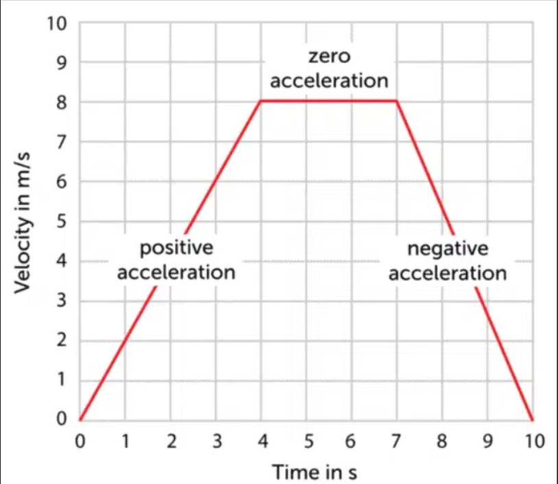
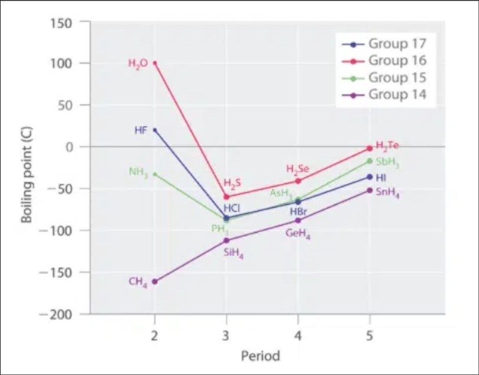
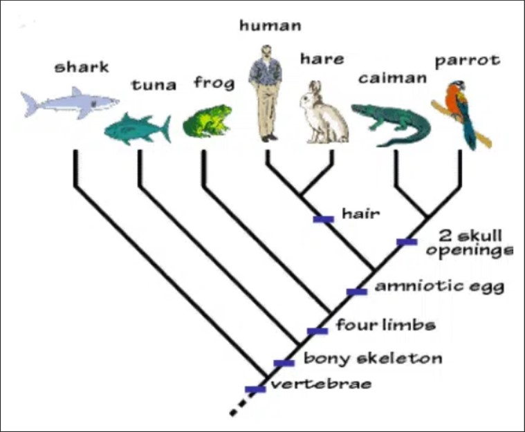
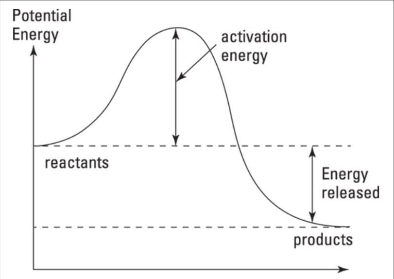
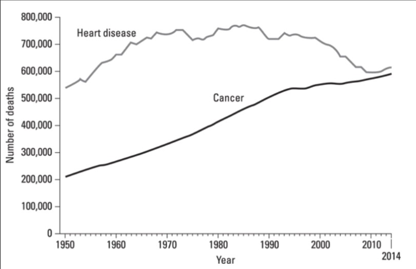

Question 1
In a velocity-time graph, acceleration, or positive velocity, is represented by the steepness of the line. Deceleration, or negative velocity, is represented with a slope downward.
Question 2
Question 3
The following cladogram illustrates the evolutionary relationships and similarities of different species.
Question 4
During a chemical reaction, the reactants are changed into the products. The following graph shows the potential energy stored in the chemical bonds at various stages of the reaction.
Question 5
This figure shows how the two leading causes of death have changed between 1950 and 2014.
1. Assuming that the graph demonstrates a sprinter’s velocity over time, how would you best describe this graph?
2. Which two compounds on the chart reflect the most extreme difference in boiling points?
3. Based upon this information, which of the following statements is true?
4. Which of the following statements correctly interprets the graph?
5. According to the figure and the given information, which of the following is a true statement?